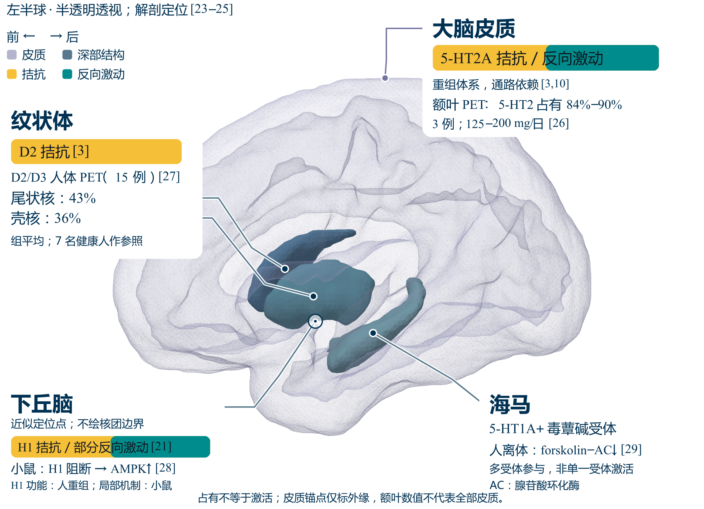
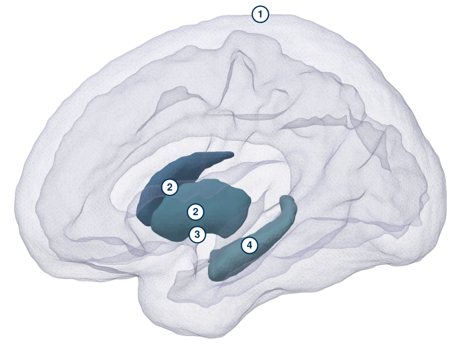
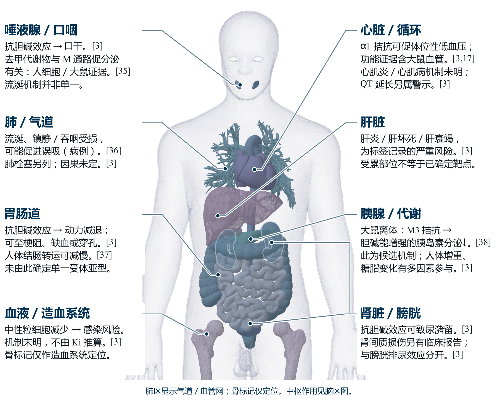
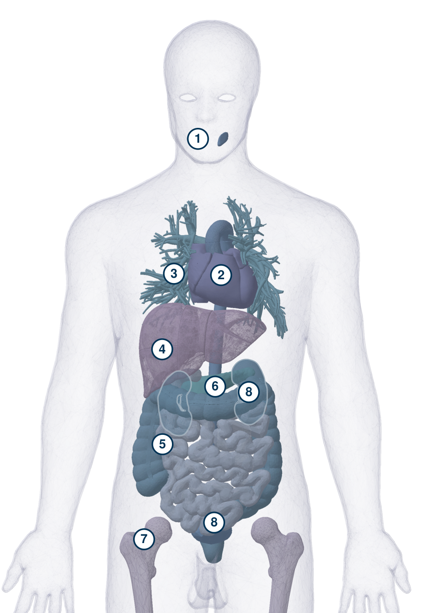

1 大脑皮质
额叶5-HT2占有84%–90%（3例）；5-HT2A拮抗／反向激动另由重组体系支持。 PET沿用5-HT2命名；不把占有等同激活；皮质顶侧锚点仅指结构外缘，非额叶数据的采样点。 该 PET 研究3例给药量125–200 mg/日。
研究与说明书依据： (HLS, 2025; Gaitonde et al., 2024; Nordström et al., 1993)
Clozapine
第二代抗精神病药。本页以氯氮平母药为主；去甲氯氮平与 N-氧化物分别讨论。中美产品与研究条件分别列出。 (国家卫生健康委员会, 2020; HLS, 2025)
Wander AG 在瑞士开发氯氮平；1969年10月首先在奥地利获批。 (PMDA, 2021)
芬兰上市后报告粒细胞缺乏及死亡事件，随后出现暂停销售或停止开发的措施。 (PMDA, 2021)
Kane 等发表与氯丙嗪比较的多中心双盲随机试验，研究对象为既往抗精神病药疗效不足者。 (Kane et al., 1988)
CLOZARIL 标签记载：美国首次批准为1989年。 (HLS, 2025)
最初研发：Wander AG（瑞士）；后续沿革涉及 Sandoz／Novartis。美国 CLOZARIL 的2025年6月标签列 HLS Therapeutics (USA), Inc. 为分销方，并列 CLOZARIL 为 Novartis 注册商标。 (PMDA, 2021; HLS, 2025)
| 多巴胺受体DR多巴胺 | D1270人·拮抗大鼠·反向激动 | D2160拮抗反向激动 | D3555反向激动 | D424竞争性拮抗 | D5454反向激动† | ||||
|---|---|---|---|---|---|---|---|---|---|
| 血清素受体5-HTR5-HT | 5-HT1A120部分激动 | 5-HT1B | 5-HT1D | 5-ht1e | 5-HT1F | 5-HT2A5.4拮抗通路依赖反向激动 | 5-HT2B | 5-HT2C9.4反向激动 | 5-HT395竞争性拮抗 |
| 5-HT4 | 5-HT5A | 5-HT64反向激动 | 5-HT76.3竞争性拮抗反向激动 | ||||||
| 肾上腺素能受体AR肾上腺素／去甲肾上腺素 | α1A1.6拮抗 | α1B | α1D | α2A90人·拮抗小鼠 arrestin3 招募§ | α2B | α2C | β1 | β2 | β3 |
| 毒蕈碱受体mAChR乙酰胆碱 | M16.2体系依赖‡ | M2 | M3 | M4 | M5 | ||||
| 组胺受体HR组胺 | H11.1拮抗部分反向激动 | H2 | H3 | H4 |
深 → 浅：Ki 小 → 大。白格未填数据，不表示无结合；点击有色条目可查看实验条件。
† D₅ 归因受限；‡ M₁ 跨体系结论不能统一；§ α₂A 的小鼠 arrestin3 招募另列，不归为普遍完全激动。5-HT₃ 保留标签的家族层级，未指定亚基。
Ki据标签§12.2，功能分别取证；命名顺序据IUPHAR。(HLS, 2025; Alexander et al., 2025)
Receptor profile
每个点表示标签报告的 Ki，单位 nM；横轴为对数坐标，向左数值更小。功能作用另据独立实验列出。
这 15 项 Ki 来自同一产品标签的汇总，逐项原始实验条件未列出，不能当作同平台的严格排序。Ki 不是占有率、作用方向或临床效力；本图不据其推算疗效。 (HLS, 2025; GraphPad, n.d.)
人重组 H₁ 功能研究；不能将患者血药浓度推算当作 H₁ PET 实测。
功能证据 (HLS, 2025; Humbert-Claude et al., 2012) · 结合值 (HLS, 2025) §12.2
功能依据为大鼠肠系膜小动脉等组织；非纯人单亚型实验。
功能证据 (Nourian et al., 2008) · 结合值 (HLS, 2025) §12.2
人 S267K 突变体与大鼠野生型分列；大鼠阳性对照为 30 μM，不直接外推人治疗浓度。
功能证据 (Purohit et al., 2003; Dalwadi et al., 2016) · 结合值 (HLS, 2025) §12.2
人 HEK293 重组体系 Gαq/11/14/i1/z 终点；不概括全部 G 蛋白或 β-arrestin。
功能证据 (HLS, 2025; Gaitonde et al., 2024) · 结合值 (HLS, 2025) §12.2
标签概括抗胆碱；母药 CHO-hM₁ 磷酸肌醇实验支持部分激动并拮抗更高效能激动剂。不能用去甲氯氮平替代母药证据。
功能证据 (HLS, 2025; Olianas et al., 1999) · 结合值 (HLS, 2025) §12.2
人 5-HT₇(b)–AC 反向激动；另一研究支持竞争性及洗脱后功能恢复。
功能证据 (Andressen et al., 2015; Teitler et al., 2010) · 结合值 (HLS, 2025) §12.2
人／大鼠重组体系基础磷酸肌醇信号；摘要未给全套 RNA 编辑型与重复数。
功能证据 (Herrick-Davis et al., 2000) · 结合值 (HLS, 2025) §12.2
人 D₄–Sf9、GTPγS 与 Schild 分析；未补称氯氮平特异洗脱动力学已证明。
功能证据 (Chabert et al., 1994) · 结合值 (HLS, 2025) §12.2
人 cAMP 拮抗与小鼠 arrestin3 招募来自不同体系；不归为普遍完全激动。
功能证据 (Kalkman & Loetscher, 2003; Cottingham et al., 2017) · 结合值 (HLS, 2025) §12.2
原论文对氯氮平明确作竞争性例外；标签 Ki 未指明亚基，不改称 5-HT₃A。
功能证据 (Rammes et al., 2004) · 结合值 (HLS, 2025) §12.2
CHO-h5-HT₁A、GTPγS；原功能研究 Ki 160 nM 与标签 120 nM 分开；效能不是占有率。
功能证据 (Newman-Tancredi et al., 1996) · 结合值 (HLS, 2025) §12.2
标签概括拮抗；反向激动来自 Gαo 过表达的人重组系统。
功能证据 (HLS, 2025; Burstein et al., 2005) · 结合值 (HLS, 2025) §12.2
人 D₁–Gs 抗体捕获支持拮抗；大鼠 D₁A–AC 支持反向激动，物种与终点分开。
功能证据 (Cussac et al., 2004; Cai et al., 1999) · 结合值 (HLS, 2025) §12.2
小鼠纹状体脑片；工具非单亚型选择性，非纯人 D₅ 功能证明。
功能证据 (Tubert et al., 2025) · 结合值 (HLS, 2025) §12.2
人重组 Gαo 过表达系统；部分激动结论属于代谢物 NDMC。
功能证据 (Burstein et al., 2005) · 结合值 (HLS, 2025) §12.2
15 / 15 项结合条目
点击一行展开实验条件与功能引文。圆点只有结合值含义，颜色不表示激动或拮抗。
Regional evidence
图中编号连接下方证据：人体占有、离体功能、动物机制与临床关联分别阅读。解剖定位不自动证明药物的局部因果作用。


脑解剖底图依据 Harvard–Oxford 图谱（Harvard CMA / FSL）；药物作用依据所引说明书与研究分别标注。额叶数值不代表全部皮质；下丘脑仅作近似点位，不绘核团边界。小屏保留同一底图并以编号连接下方文字。 (CMA/FSL, n.d.; Talairach/AtlasReader, n.d.; BrainMap, 2007; HLS, 2025; Gaitonde et al., 2024; Humbert-Claude et al., 2012; Nordström et al., 1993; Gründer et al., 2006; Kim et al., 2007; Marazziti et al., 2014)
Harvard CMA / FSL · CC BY-SA 4.0 · 脑解剖底图及适配标注
额叶5-HT2占有84%–90%（3例）；5-HT2A拮抗／反向激动另由重组体系支持。 PET沿用5-HT2命名；不把占有等同激活；皮质顶侧锚点仅指结构外缘，非额叶数据的采样点。 该 PET 研究3例给药量125–200 mg/日。
研究与说明书依据： (HLS, 2025; Gaitonde et al., 2024; Nordström et al., 1993)
人体PET平均D2/D3占有：尾状核43%、壳核36%（15患者；7健康参照）；D2拮抗为标签功能总述。 同一研究的组平均；示踪剂不能分离D2与D3；不是个体固定值或疗效中心。
研究与说明书依据： (HLS, 2025; Gründer et al., 2006)
H1拮抗／部分反向激动另据人重组功能；小鼠下丘脑H1阻断相关AMPK活性增加。 人脑图上只标对应区域；不把动物实验升格为人体测量；点的大小无解剖体积或药效含义。
研究与说明书依据： (Humbert-Claude et al., 2012; Talairach/AtlasReader, n.d.; BrainMap, 2007; Kim et al., 2007)
母药在人死后海马抑制forskolin刺激的AC；阻断实验提示5-HT1A与毒蕈碱受体共同参与。 M4为作者解释；不写成M1已确定激活或人体认知疗效。
研究与说明书依据： (Marazziti et al., 2014)
母药H1拮抗／部分反向激动可能减弱组胺介导觉醒。 基于母药受体功能、一般H1小鼠生理与临床镇静的机制解释；无单脑核归因。
研究与说明书依据： (HLS, 2025; Humbert-Claude et al., 2012; Huang et al., 2006)
下丘脑H1阻断—AMPK增加是促食欲／增重候选链。 小鼠信号机制；到人体食欲和增重为外推，非人体唯一原因。
研究与说明书依据： (Kim et al., 2007)
中枢抗胆碱效应可参与认知干扰，意识混乱／谵妄亦可见；镇静可参与。 标签与机制整合，不能断言唯一M亚型、脑区或所有患者长期认知必然恶化。
研究与说明书依据： (HLS, 2025)
纹状体D2阻断与部分锥体外系反应相关；较低占有与较低EPS倾向相符；迟发性运动障碍另列且风险非零。 不同运动异常不能一律解释成同一个急性阻断机制；PET组平均不预测个人风险。
研究与说明书依据： (HLS, 2025; Kessler et al., 2006)
惊厥阈值降低、剂量相关发作风险；可见肌阵挛和脑电异常。 肌阵挛或脑电改变不一概等同临床癫痫；不指定单受体／脑核；发生率及监测见本页“安全与监测”。
研究与说明书依据： (HLS, 2025)
骤停后胆碱能反跳可解释部分激越等症状；精神病性症状可快速复现。 反跳解释和精神病性症状复现不合并成单一局部因果；不提供个人停药方案。
研究与说明书依据： (HLS, 2025; Shiovitz et al., 1996)
检查行为与药物剂量、工作记忆及症状负荷有关；尚不能确立单受体／局部脑区因果。 横断面临床／认知关联，选择分组不能算发生率，不新增强迫症状发生点。
研究与说明书依据： (HLS, 2025; Biria et al., 2025)
高热、强直、意识改变和自主神经不稳的严重综合征；机制不归于唯一受体／脑核。 临床警示不等于已经定位机制；不与下丘脑H1—AMPK增重链连线。
研究与说明书依据： (HLS, 2025)
Peripheral effects
受累器官、作用起点与机制证据分别说明；严重症状的临床评估不应等待机制确定。


人体解剖底图来自 BodyParts3D，按器官组织药物相关作用和风险。肺区为气道／血管网；骨标记仅定位造血系统。器官着色只区分解剖，不表示风险或受体密度；小屏编号对应下方八组说明。 (BodyParts3D, n.d.; HLS, 2025; Nourian et al., 2008; Ishikawa et al., 2020; Trigoboff et al., 2013; Every-Palmer et al., 2016; Johnson et al., 2005)
BodyParts3D, © The Database Center for Life Science · CC BY 4.0 · 人体解剖底图及适配标注
抗胆碱效应 → 口干。去甲代谢物与 M 通路促分泌有关：人细胞／大鼠证据。流涎机制并非单一。
研究与说明书依据： (HLS, 2025; Ishikawa et al., 2020)
α1 拮抗可促体位性低血压；功能证据含大鼠血管。心肌炎／心肌病机制未明；QT 延长另属警示。
研究与说明书依据： (HLS, 2025; Nourian et al., 2008)
流涎、镇静／吞咽受损，可能促进误吸（病例）。肺栓塞另列；因果未定。
研究与说明书依据： (HLS, 2025; Trigoboff et al., 2013)
肝炎／肝坏死／肝衰竭，为标签记录的严重风险。受累部位不等于已确定靶点。
研究与说明书依据： (HLS, 2025)
抗胆碱效应 → 动力减退；可至梗阻、缺血或穿孔。人体结肠转运可减慢。未由此确定单一受体亚型。
研究与说明书依据： (HLS, 2025; Every-Palmer et al., 2016)
大鼠离体：M3 拮抗 →胆碱能增强的胰岛素分泌↓。此为候选机制；人体增重、糖脂变化有多因素参与。
研究与说明书依据： (HLS, 2025; Johnson et al., 2005)
中性粒细胞减少 → 感染风险。机制未明，不由 Ki 推算。骨标记仅作造血系统定位。
研究与说明书依据： (HLS, 2025)
抗胆碱效应可致尿潴留。肾间质损伤另有临床报告；与膀胱排尿效应分开。
研究与说明书依据： (HLS, 2025)
发热／咽痛立即联系医生；查血常规＋ANC及感染。
研究与说明书依据： (HLS, 2025)
ECG、电解质；疑似心肌炎查肌钙蛋白／CRP 等。
研究与说明书依据： (HLS, 2025; Higgins et al., 2019)
主动记录排便；明显腹痛腹胀、呕吐或不排气：立即就医。
研究与说明书依据： (HLS, 2025)
监测体重、血糖、血脂。
研究与说明书依据： (HLS, 2025)
结合症状查肝肾功能。
研究与说明书依据： (HLS, 2025)
新发胸痛、呼吸困难／误吸，立即就医。
研究与说明书依据： (HLS, 2025; Trigoboff et al., 2013)
Pharmacokinetics
以下核心参数限定为美国 CLOZARIL 普通口服片及所列给药条件。
普通片 100 mg、每日两次、稳态：平均 2.5 小时，范围 1–6 小时。
§12.3 Absorption (HLS, 2025)
单次 75 mg：8 小时（4–12）；100 mg 每日两次稳态：12 小时（4–66）。两种条件不合并。
§12.3 Metabolism and Excretion (HLS, 2025)
标签约 97%；不能据此直接推算组织游离浓度或药物相互作用大小。
§12.3 Distribution (HLS, 2025)
从上方中央的母药沿箭头阅读：两侧为主要代谢物，下方为 N-结合、芳环转化及 O-结合分支。每个结构仅出现一次，酶和反应类型标在连接线上，活性标在结构下方。
转化酶来自人肝／重组体外实验；箭头不表示人体通路贡献率，也不是配平反应方程式。芳环及结合产物依据人体排泄物鉴定；活性判断保留实验条件。(HLS, 2025; Burstein et al., 2005; Fang et al., 1998; Tugnait et al., 1997; Chang et al., 1998; Erickson-Ridout et al., 2012; Breyer-Pfaff & Wachsmuth, 2001; Dain et al., 1997; Schaber et al., 2001)
母药、NDMC与CNO的化学身份：NCBI PubChem；其余结构依据产物鉴定及连接位点资料。(NCBI, n.d.; Erickson-Ridout et al., 2012; Breyer-Pfaff & Wachsmuth, 2001; Dain et al., 1997; Schaber et al., 2001)
单独打开反应总图 ↗ · 小屏可打开总图查看结构细节；研究条件见下方展开说明。
分母为给药量。氯氮平排泄前已广泛代谢，尿、粪中的原形药仅为痕量；主要排出代谢物及结合物。上述数字不是原形药的肾清除比例，也未完整交代全部给药量的去向，不能将余量推定为另一排泄途径。(HLS, 2025; Dain et al., 1997)
美国 CLOZARIL 说明书 §12.3；Dain 等（1997）人体放射示踪摘要。
母药、NDMC、CNO分别约0.12%、5.3%、8.3%给药量；15人研究，剂量相关分析n=14，8小时尿样外推24小时，几何均值。
研究与说明书依据： (Schaber et al., 1998)
6名健康男性空腹单次50 mg [14C]氯氮平；尿0–144 h回收49.0%，粪29.6%，同段未明粪便时窗。这是药物相关物质回收，不是原形药清除比例。
PMDA2009印刷页39，Study29 (PMDA, 2009)
三类N结合物尿中各约0.1%–0.5%给药量；n=4，采集时窗未详。各结合物的独立活性资料不足；不是完整结合率或精确个体分数。
研究与说明书依据： (Breyer-Pfaff & Wachsmuth, 2001)
连续用药研究报告原形药净重吸收、NDMC／CNO净分泌；与尿中给药量分数分别理解，不能据此推算肾功能不全的固定减量比例。
研究与说明书依据： (Schaber et al., 1998)
所引人体鉴定研究的尿中主要物质包括羟化NDMC及其结合物、CNO；粪中主要为CLZ-N-GlcA，5-N／N⁺未区分。逐物种酶、独立活性和比例资料不足；不把产物检出量当作人体通路贡献率。
研究与说明书依据： (Dain et al., 1997)
Clinical use
批准适应证、指南／共识及研究用途分别呈现。剂量路径限定为所引美国成人普通片标签；国际共识用于解释评估过程，不能替代国内目标产品说明书。
CLOZARIL 普通片标签包括难治性精神分裂症，以及降低有相关病史和临床状态提示持续风险的精神分裂症／分裂情感性障碍患者反复自杀行为风险。攻击风险的指南推荐不等于独立获批适应证。
标签§1.1–1.2；APA条款7–9 (HLS, 2025; Keepers et al., 2020)
2020 诊疗规范列为第二代抗精神病药；2025 难治性精神分裂症共识讨论其治疗定位。共识的 900 mg/日上限不能替代其指出的国内说明书 600 mg/日上限；超出说明书应按超说明书管理。具体批准范围仍须核对目标产品现行说明书。
[51]推荐5–10 (国家卫生健康委员会, 2020; 马相宜等, 2025)
帕金森病药物相关精神病 RCT 为 60 人、4 周、6.25–50 mg/日；难治性伴精神病性症状躁狂研究为 22 人、12 周开放研究。研究证据不自动成为批准适应证，也不套用精神分裂症剂量路径。
[53][54]摘要 (Parkinson Study Group, 1999; Green et al., 2000; 国家卫生健康委员会, 2020)
TRRIP 共识要求至少两种不同抗精神病药的充分试验，治疗剂量下每种至少 6 周；同时评估持续症状、功能受损和实际服药情况。漏服、剂量不足或疗程过短时，先查清治疗是否充分，不能仅凭“换过两种药”判为难治。
国际共识：摘要、§5.1–5.3 (Howes et al., 2017)
记录血常规／ANC、体重与代谢指标、排便情况、血压脉搏及合并用药；心脏病史或相关风险需进一步评估，考虑 ECG 与电解质。确认患者能完成复查，并知道发热、胸痛、晕厥和严重便秘的就医途径。
起始 ANC 条件及后续频率见 06 不良反应与监测；地区和人群标准分开使用。
§2.1、5.2、5.7、5.9–5.10 (HLS, 2025)
将起始时最困扰的症状、日常功能与治疗目标记录下来，在随访中用一致口径比较；同时记录镇静、排便、体重与代谢变化，不能只用“睡得更多”判断抗精神病疗效。
症状、功能及依从性属于疗效判定的不同维度；监测安排应与患者和照护者共同确认。
TRRIP摘要；标签§5：编辑性随访清单 (Howes et al., 2017; HLS, 2025)
TRRIP 对氯氮平无反应的优化判定建议：在稳定剂量下至少两次测谷浓度，间隔至少一周，并以 ≥350 ng/mL 作为参考条件。采血时间、依从性和吸烟状况都会影响解读。
这是共识的评估标准，不是人人必须追到的浓度，也不是自行加量目标；结果需结合疗程、症状和耐受判断，再讨论后续方案。
§5.4；检索所得原稿正文片段 (Howes et al., 2017)
12.5 mg，每日一次或两次。
§2.2 (HLS, 2025)
耐受时每日总量增加 25–50 mg，避免快速加量。
§2.2、5.2 (HLS, 2025)
标签目标为两周末 150–225 mg、每日两次，即总量 300–450 mg/日。不是每位患者必须达到的进度。
§2.2 (HLS, 2025)
后续可每周一次或两次、每次总日剂量增加不超过 100 mg；美国该产品最高 450 mg、每日两次（900 mg/日）。
§2.2 (HLS, 2025)
美国该标签：漏服一天剂量，恢复原剂量的 40%–50%；两天约 25%；更久从 12.5 mg 每日一次或两次重启。患者漏服一天或以上应先联系医生，不能按原剂量自行恢复；这些条款不构成个人重启处方。 (HLS, 2025)
§2.6、17 Missed Doses
美国标签对 ANC 正常或轻度下降者的计划停药，建议在 1–2 周逐渐减量；中重度中性粒细胞减少等情境需按专门流程处理。不能把渐减时间套用于需要立即医疗处理的严重反应。
停药后仍需留意精神症状复发及出汗、恶心、呕吐、腹泻等胆碱能反跳；中断后的重启规则与计划减量不同。
§2.5、5.20 (HLS, 2025)
Safety & monitoring
同一研究的数据一起比较；不同研究的风险保留各自分母、时间和统计口径。
氯氮平组 N=479，2 年研究；患者报告比例，未按暴露时长校正。此图不计算与对照的因果风险差。 (HLS, 2025)
数据定位：[3] §6.1，表 11；条长为线性的 0%–100%，不是发生速度或严重程度。
早期美国 CPMS 队列 N=11,555、73 例；1 年累计风险 0.80%（95% CI 0.61%–0.99%）。历史队列，不能当作当前所有产品或所有人群的统一风险。
[57]摘要；§4.3 (Alvir et al., 1993)
标签上市前资料：N=1,743，61 人发生，粗比例 3.50%；估计 1 年累计约 5%。两个数字的统计口径不同，风险与剂量相关。
标签§5.4 (HLS, 2025)
澳新药物警戒：160/43,132，报告频率约 0.37%，至少 29 人死亡；存在漏报，不能视为真实发生率或统一 22 年个人随访风险。
[58]、§4.3 (Every-Palmer & Ellis, 2017)
心肌炎、心肌病、NMS、DRESS、QT 延长等需要按具体临床情境评估。本页不把异质研究合并为统一绝对率，缺少可比率不表示风险为零。
标签§5；(HLS, 2025; Higgins et al., 2019)
CLOZARIL 标签：前 6 个月每周；第 7–12 个月每两周；第 13 个月起每月。一般人群起始 ANC ≥1,500/μL；已确诊 BEN／Duffy-null 相关中性粒细胞计数人群须用专表和基线条件。
§2.1、2.3–2.4 Tables1–2 (HLS, 2025)
美国非 BEN：1,000–1,499/μL 可继续并加强检测；500–999/μL 中断、血液科评估；<500/μL 停药并血液科评估。初次低值应及时复测。BEN 的 500–999/μL 分支不同，不应套用一般人群表；恢复阈值和频率须查看完整标签。
§2.3–2.4 Tables1–2；24小时复测及恢复分支见原表 (HLS, 2025)
2025 中国共识推荐 11：前 18 周每周、第 19 周至 12 个月每月查 WBC/ANC；产品要求及后续频率仍须核对。不能与美国频率拼成一套方案。
中国专家共识，推荐11 (马相宜等, 2025)
FDA 于 2025-06-13 取消美国 Clozapine REMS；不再要求登记和向 REMS 报送 ANC。FDA 仍建议依处方标签监测 ANC。
FDA 2025-08-27 官方通告相关正文 (FDA, 2025)
发热／咽痛或感染表现、胸痛／呼吸困难、严重或持续腹痛／腹胀／呕吐，以及高热伴强直和意识改变，应及时联系医疗团队；严重症状应急诊评估。监测还包括按风险评估体重、血糖、血脂、循环和心脏状况。 (HLS, 2025; Higgins et al., 2019; NHS SPS, 2022)
Special populations
地区、具体产品和生命阶段会改变使用边界；本页不输出个人调量方案。
美国标签提示显著损害可能使氯氮平浓度升高、需减量，但没有统一的 Child-Pugh、eGFR 或透析剂量表。应结合功能变化、耐受与血药浓度评估，不能只因主要经肝代谢就忽略肾功能。
中国所引恩华说明书副本另有禁忌和限制，现行修订日期尚未确认；实际用药需核对目标产品有效说明书。
§8.6、12.3；中国产品副本第5、13页 (HLS, 2025; 恩华药业, n.d.)
老年人对体位性低血压、心动过速、便秘和尿潴留可能更敏感；选量时同时考虑肝肾心功能、合并疾病与其他药物，观察跌倒和日常活动变化。
痴呆相关精神病有死亡风险警示，美国未批准该用途。不存在适用于所有老年人的统一减半规则。
§5.3、5.6、8.5 (HLS, 2025)
美国标签儿科安全性与有效性未确立；中国所引副本“12 岁以下不宜”不意味着 12 岁以上自动获批。
若由专科团队考虑使用，需要解释证据与批准状态、既往治疗效果及复查负担，并让监护人与具备相应理解能力的青少年参与讨论。此处不外推成人剂量。
§8.4；产品副本第14页；决策问题为编辑性提示 (HLS, 2025; 恩华药业, n.d.)
记录既往有效方案、复发史、当前控制情况及换药经历。共同决策同时讨论母亲疾病复发与药物暴露，避免只比较一种风险。
ACOG 不建议仅因妊娠或哺乳状态就停用精神药物；这是一般原则，不代表氯氮平已被证明安全，也不能取代具体产品限制。
指南第1265、1267–1268页 (ACOG, 2023)
现有资料不足以排除药物相关风险；未经治疗的精神分裂症本身也可能带来复发、住院及不良围产结局。应由精神科和产科结合既往获益、当前病情及可替代方案共同判断。
孕期仍需关注体重、血糖等代谢问题；发现妊娠后先联系治疗团队，不自行骤停或换药。
§8.1、5.10；ACOG共同决策原则 (HLS, 2025; ACOG, 2023)
第三孕期暴露后，新生儿可能出现锥体外系或撤药症状，包括肌张力异常、震颤、嗜睡、呼吸困难和喂养问题；严重程度及持续时间不一。
分娩前告知产科与新生儿团队用药情况，出生后观察并按症状处理，不能用正常产检替代出生后的评估。
§8.1 (HLS, 2025)
氯氮平可进入人乳，已有婴儿镇静及粒细胞缺乏的个案报告。美国标签要求权衡母亲治疗需要、哺乳获益与婴儿风险；发生暴露的婴儿需监测过度镇静与中性粒细胞减少。
具体产品的哺乳限制仍须遵守，不能将美国的风险权衡条款当作中国用药许可；提前与精神科及儿科安排喂养方案。
§8.2；中国产品副本 (HLS, 2025; 恩华药业, n.d.)
肺炎及其他炎症状态可能使浓度升高；停止吸烟或停用诱导代谢的药物，也可能改变原有剂量对应的暴露。发热或住院时应告知团队最近的吸烟量、用药变化和末次服药时间。
这类变化需重新评估耐受和监测计划；不能把原先稳定的剂量视为任何情境下都同样合适。
§7.1、12.3 (HLS, 2025)
根据标签与共同决策原则整理的讨论清单 (HLS, 2025; ACOG, 2023; Howes et al., 2017)
Cost snapshots
各行保留厂家、剂型、包装、地区、价格性质和日期。下方产品表金额为人民币；历史采购价、挂网价与医院公示价分别标明。
统一按 300–450 mg/日 × 30 日估算；取美国成人普通片标签目标剂量作费用情景，个人处方可能不同。以下均为药品金额，不含检查、诊疗及配送。(HLS, 2025)
约 ¥30–46 / 30 日
按实际用量折算。恩华／常州 25 mg × 100 片，¥8.37–8.44/盒；从无库存整盒购入约需 4–6 盒，¥33.48–50.64。
芜湖医院集采接续调价公示，2026-05-19；不代表全国统一零售价或医保自付额。
约 £35–53 / 30 日
按实际用量折算。普通片 100 mg × 100 片的 NHS 标示价为 £39；从无库存整盒购入约需 1–2 盒，£39–78。
英国原研品牌处方信息，2026-06修订。此为英国药品标示价；中国原研可靠公开报价仍缺，不能作为国内购买价或进口报价。
计算：日剂量 × 30 ÷ 每盒总毫克数 × 包装价。两地币种、采购体系与支付规则不同，不直接计算价差倍数。
| 厂家／品牌 | 剂型与包装 | 包装价 | 价格性质／地区／日期 |
|---|---|---|---|
| 江苏恩华 | 普通片 25 mg × 100 片 | ¥8.37 | 芜湖医院公示；集采接续调价；2026-05-19 (芜湖市第一人民医院, 2026) |
| 常州制药 | 普通片 25 mg × 100 片 | ¥8.44 | 芜湖医院公示；集采接续调价；2026-05-19 (芜湖市第一人民医院, 2026) |
| 万邦德 | 普通片 25 mg × 100 片 | ¥5.00 | 广东联盟 2024 相关历史中选资料；0.05 元/片 ×100 折算 (广东联盟, n.d.) |
| 齐鲁制药 | 普通片 25 mg × 100 片 | ¥7.60 | 广东联盟 2024 相关历史中选资料；0.076 元/片 ×100 折算 (广东联盟, n.d.) |
| 寿光富康 | 分散片 25 mg × 100 片 | ¥8.99 | 青海集采接续项目变更后挂网价；2025-03-06 (青海省医保局, 2025) |
| 寿光富康 | 分散片 100 mg × 60 片 | ¥15.59 | 青海集采接续项目变更后挂网价；2025-03-06 (青海省医保局, 2025) |
| 江苏恩华／维必朗 | 口腔崩解片 25 mg × 50 片 | ¥19.93 | 金寨医院公示；集采批次未注明；2026-03-27。商品名另据厂家页。 (恩华药业, n.d.; 汤家汇镇中心卫生院, 2026) |
小屏可横向滑动此表；未注明集采批次不等于非集采。快照不表示当前价格、全国统一价或医保后自付。
以 300 mg/日 ×30 日＝9,000 mg，仅为费用演算，不是剂量建议。普通片与不同剂型不能按价格自行替换。
| 产品 | 按用量折算 | 整包装购入 |
|---|---|---|
| 江苏恩华 普通片 · 25 mg | ¥30.13 | 4 包装 · ¥33.48 |
| 常州制药 普通片 · 25 mg | ¥30.38 | 4 包装 · ¥33.76 |
| 寿光富康 分散片 · 25 mg | ¥32.36 | 4 包装 · ¥35.96 |
| 寿光富康 分散片 · 100 mg | ¥23.39 | 2 包装 · ¥31.18 |
| 江苏恩华／维必朗 口腔崩解片 · 25 mg | ¥143.50 | 8 包装 · ¥159.44 |
本页计算：需片数＝9,000÷单片 mg；用量费用＝需片数÷包装片数×包装价；整包装数向上取整。无结余假设，未扣医保，不含诊疗、监测、配送。输入来自上述注明日期的记录。 (芜湖市第一人民医院, 2026; 青海省医保局, 2025; 汤家汇镇中心卫生院, 2026)
美国 CLOZARIL 标签可确认品牌与普通片身份；2017 年参比目录是历史记录，不能证明当前中国进口供应或购买价。本页不据此估算原研中国月费。 (HLS, 2025; 原国家食药监总局, 2017)
Sources & version
按作者排序列出本页实际引用的文献与资料。点击正文作者—年份可展开完整书目；来源编号用于图中文字与书目对照。DOI、PubMed及机构链接可直接访问原始来源；n.d. 表示未确认发布日期。
页面 v0.5.2 · 更新日期 2026-10-19（Asia/Shanghai）· 68 项来源。v0.5统一引用并复核相关代谢与排泄资料；v0.5.2将既有结构整合为分支反应总图，医学事实保持；各条目的读取范围见下方说明，未宣称完成全部文献重审。
ACOG Committee on Clinical Practice Guidelines-Obstetrics. (2023). Treatment and Management of Mental Health Conditions During Pregnancy and Postpartum: ACOG Clinical Practice Guideline No. 5. Obstetrics and gynecology, 141(6), 1262–1288. https://doi.org/10.1097/AOG.0000000000005202
本页用途：ACOG 2023：围产期精神药物决策的一般原则
证据范围与限制：2026-10-17读取原指南PDF相关正文：印刷页1265（PDF第4页）的不应仅因妊娠/哺乳停用精神药物建议、1267–1268（PDF第6–7页）的既往有效性、换药时交叉暴露及停药/治疗不足风险；另核对ACOG官方实施页面可检索正文。未宣称整部指南逐条审核。官网指南直接打开受限，原始指南正文由Project TEACH托管副本取得。
Alexander, S. P. H., Davenport, A. P., Kelly, E., Gibb, A. J., Mathie, A. A., Peach, C. J., Veale, E. L., Armstrong, J. F., Faccenda, E., Harding, S. D., Southan, C., Davies, J. A., Abbracchio, M. P., Abraham, G. R., Agoulnik, A., Alexander, W., Al-Hosaini, K., Bäck, M., Baker, J. G., …, Zaidman, N. (2025). The Concise Guide to PHARMACOLOGY 2025/26: G protein-coupled receptors. British Journal of Pharmacology, 182(Suppl 1), S24–S151. https://doi.org/10.1111/bph.70230
本页用途：固定受体家族与命名顺序
证据范围与限制：来源记录；仅用于上述主题，不据此推定其他实验体系或临床结论。
Alvir, J. M., Lieberman, J. A., Safferman, A. Z., Schwimmer, J. L., & Schaaf, J. A. (1993). Clozapine-induced agranulocytosis. Incidence and risk factors in the United States. The New England journal of medicine, 329(3), 162–167. https://doi.org/10.1056/NEJM199307153290303
本页用途：粒细胞缺乏：美国早期CPMS队列
证据范围与限制：已查阅的完整摘要；2026-10-17再核对PubMed检索结果中的N=11,555、73例、1年0.80%及95% CI 0.61%–0.99%。此次直接打开PubMed未返回正文，不升级为全文读取。
Andressen, K. W., Manfra, O., Brevik, C. H., Ulsund, A. H., Vanhoenacker, P., Levy, F. O., & Krobert, K. A. (2015). The atypical antipsychotics clozapine and olanzapine promote down-regulation and display functional selectivity at human 5-HT7 receptors. British journal of pharmacology, 172(15), 3846–3860. https://doi.org/10.1111/bph.13169
本页用途：5-HT7 反向激动
证据范围与限制：Europe PMC 相关全文及图注。- 本页用途与定位：5-HT7 反向激动；Results 首节、图1：人5-HT7(b)–AC。
Biria, M., Banca, P., Barnham, I. J., Marzuki, A. A., Segarra, N., Keser, E., Sule, A., Farrugia, M., Luo, Q., Fineberg, N., Fernandez-Egea, E., & Robbins, T. W. (2025). Clozapine-induced obsessive-compulsive symptoms in schizophrenia: Clinical and cognitive determinants of dysfunctional checking. Psychological Medicine, 55, Article e87. https://doi.org/10.1017/S0033291724003350
本页用途：强迫症状的认知与临床关联及局部机制限制
证据范围与限制：出版商上述正文已核对；横断面行为与临床关联研究，不是受体干预或局部因果实验；所读方法未明确所用氯氮平商品品牌。- 本页用途及定位：Abstract、Methods、Discussion相关小节、Limitations。
Breyer-Pfaff, U., & Wachsmuth, H. (2001). Tertiary N-glucuronides of clozapine and its metabolite desmethylclozapine in patient urine. Drug metabolism and disposition: the biological fate of chemicals, 29(10), 1343–1348. https://pubmed.ncbi.nlm.nih.gov/11560879/
本页用途：5-N与季铵N结合物的人尿检出
证据范围与限制：完整摘要；质谱及1H NMR确认5-N连接位置；4名患者，三类尿结合物各约0.1%–0.5%给药量，摘要未交代采集时窗。
Burstein, E. S., Ma, J., Wong, S., Gao, Y., Pham, E., Knapp, A. E., Nash, N. R., Olsson, R., Davis, R. E., Hacksell, U., Weiner, D. M., & Brann, M. R. (2005). Intrinsic efficacy of antipsychotics at human D2, D3, and D4 dopamine receptors: identification of the clozapine metabolite N-desmethylclozapine as a D2/D3 partial agonist. The Journal of pharmacology and experimental therapeutics, 315(3), 1278–1287. https://doi.org/10.1124/jpet.105.092155
本页用途：D2／D3 人重组反向激动
证据范围与限制：完整摘要；未取得各药完整数据表。- 本页用途与定位：D2／D3 人重组反向激动；摘要 Results：Gαo 过表达；母药与 NDMC 区别。
Cai, G., Gurdal, H., Smith, C., Wang, H. Y., & Friedman, E. (1999). Inverse agonist properties of dopaminergic antagonists at the D(1A) dopamine receptor: uncoupling of the D(1A) dopamine receptor from G(s) protein. Molecular pharmacology, 56(5), 989–996. https://doi.org/10.1124/mol.56.5.989
本页用途：D1 大鼠反向激动
证据范围与限制：完整摘要；不将其中大鼠 D₁A 写成人 D₅。- 本页用途与定位：D1 大鼠反向激动；摘要：大鼠 D1A、PC2、AC 与 Gs 耦联。
Chabert, C., Cavegn, C., Bernard, A., & Mills, A. (1994). Characterization of the functional activity of dopamine ligands at human recombinant dopamine D4 receptors. Journal of neurochemistry, 63(1), 62–65. https://doi.org/10.1046/j.1471-4159.1994.63010062.x
本页用途：D4 竞争性拮抗
证据范围与限制：完整摘要。- 本页用途与定位：D4 竞争性拮抗；摘要：人 D4–Sf9、GTPγS、Schild。
Chang, W. H., Lin, S. K., Lane, H. Y., Wei, F. C., Hu, W. H., Lam, Y. W., & Jann, M. W. (1998). Reversible metabolism of clozapine and clozapine N-oxide in schizophrenic patients. Progress in neuro-psychopharmacology & biological psychiatry, 22(5), 723–739. https://doi.org/10.1016/s0278-5846(98)00035-9
本页用途：N-氧化物的人体回转
证据范围与限制：完整摘要；8名男性精神分裂症患者，单次给药、随机交叉。未从摘要确定回转酶或具体组织。
Cottingham, C., Che, P., Zhang, W., Wang, H., Wang, R. X., Percival, S., Birky, T., Zhou, L., Jiao, K., & Wang, Q. (2017). Diverse arrestin-recruiting and endocytic profiles of tricyclic antipsychotics acting as direct α2A adrenergic receptor ligands. Neuropharmacology, 116, 38–49. https://doi.org/10.1016/j.neuropharm.2016.12.004
本页用途：α2A 小鼠 arrestin 偏向作用
证据范围与限制：2026-10-17 已读检索服务返回的 PMC 相关正文和图注；直接打开入口当次出现验证页，未将其记作成功全文下载。- 本页用途与定位：α2A 小鼠 arrestin 偏向作用；§2.2、§3.2；图2–3；受体为小鼠来源。
Cussac, D., Pasteau, V., & Millan, M. J. (2004). Characterisation of Gs activation by dopamine D1 receptors using an antibody capture assay: antagonist properties of clozapine. European journal of pharmacology, 485(1-3), 111–117. https://doi.org/10.1016/j.ejphar.2003.11.077
本页用途：D1 人源拮抗
证据范围与限制：完整摘要。- 本页用途与定位：D1 人源拮抗；摘要：人 D1、Gs 抗体捕获、pKB。
Dain, J. G., Nicoletti, J., & Ballard, F. (1997). Biotransformation of clozapine in humans. Drug metabolism and disposition: the biological fate of chemicals, 25(5), 603–609. https://pubmed.ncbi.nlm.nih.gov/9152600/
本页用途：人体排泄物组成与7/8位代谢
证据范围与限制：2026-10-19复核 PubMed 完整摘要。健康男性单次口服50 mg [14C]氯氮平；尿粪总回收与产物组成。未取得全文个体排泄物分布表，不补各产物百分比。
Dalwadi, D. A., Kim, S., Amdani, S. M., Chen, Z., Huang, R. Q., & Schetz, J. A. (2016). Molecular mechanisms of serotonergic action of the HIV-1 antiretroviral efavirenz. Pharmacological research, 110, 10–24. https://doi.org/10.1016/j.phrs.2016.04.028
本页用途：5-HT6 大鼠野生型反向激动
证据范围与限制：PMC 相关正文与图注；论文主研究药是 efavirenz，此处只取实际测量的氯氮平对照结果。- 本页用途与定位：5-HT6 大鼠野生型反向激动；§2.6、§3.2／图9；30 μM 氯氮平对照。
Erickson-Ridout, K. K., Sun, D., & Lazarus, P. (2012). Glucuronidation of the second-generation antipsychotic clozapine and its active metabolite N-desmethylclozapine. Potential importance of the UGT1A1 A(TA)₇TAA and UGT1A4 L48V polymorphisms. Pharmacogenetics and genomics, 22(8), 561–576. https://doi.org/10.1097/FPC.0b013e328354026b
本页用途：三种直接N-葡萄糖醛酸结合物与UGT
证据范围与限制：已查阅公开作者稿 Figure 1、Results及酶动力学相关正文；人肝微粒体与重组UGT，按产物区分。图中GlcA仅表示连接位点。
Every-Palmer, S., & Ellis, P. M. (2017). Clozapine-Induced Gastrointestinal Hypomotility: A 22-Year Bi-National Pharmacovigilance Study of Serious or Fatal 'Slow Gut' Reactions, and Comparison with International Drug Safety Advice. CNS drugs, 31(8), 699–709. https://doi.org/10.1007/s40263-017-0448-6
本页用途：严重胃肠动力减退：澳新自发报告
证据范围与限制：2026-10-17核对出版社摘要、分母估计及漏报讨论相关正文。报告期1992–2013；注册暴露分母合计43,132，澳洲自1992年至2013年中、新西兰自1988年至2013年中。不是统一个人22年随访；PMC本次打开遇验证页，不记为成功阅读全文。
Every-Palmer, S., Nowitz, M., Stanley, J., Grant, E., Huthwaite, M., Dunn, H., & Ellis, P. M. (2016). Clozapine-treated Patients Have Marked Gastrointestinal Hypomotility, the Probable Basis of Life-threatening Gastrointestinal Complications: A Cross Sectional Study. EBioMedicine, 5, 125–134. https://doi.org/10.1016/j.ebiom.2016.02.020
本页用途：人体结肠转运与胃肠动力减退
证据范围与限制：通过 Europe PMC 开放全文取得原论文，核对了样本、排除条件和转运结果。开放全文接口：-
Fang, J., Coutts, R. T., McKenna, K. F., & Baker, G. B. (1998). Elucidation of individual cytochrome P450 enzymes involved in the metabolism of clozapine. Naunyn-Schmiedeberg's archives of pharmacology, 358(5), 592–599. https://doi.org/10.1007/pl00005298
本页用途：N-脱甲基与N-氧化的酶
证据范围与限制：完整摘要；重组人酶与16份人肝微粒体；20和300 μM体系。不能将体外结果换成人体通路贡献百分比。
Gaitonde, S. A., Avet, C., de la Fuente Revenga, M., Blondel-Tepaz, E., Shahraki, A., Pastor, A. M., Talagayev, V., Robledo, P., Kolb, P., Selent, J., González-Maeso, J., & Bouvier, M. (2024). Pharmacological fingerprint of antipsychotic drugs at the serotonin 5-HT2A receptor. Molecular psychiatry, 29(9), 2753–2764. https://doi.org/10.1038/s41380-024-02531-7
本页用途：5-HT2A 通路依赖反向激动
证据范围与限制：Europe PMC 相关全文；保留 G 蛋白亚型与过表达系统。- 本页用途与定位：5-HT2A 通路依赖反向激动；Methods；Results pathway preference；图2与图注。
GraphPad Software. (n.d.). Equation: One site—Fit Ki. GraphPad Prism 11 Curve Fitting Guide. https://www.graphpad.com/guides/prism/latest/curve-fitting/reg_one_site_competition_ki.htm
本页用途：Ki 的平衡解离常数解释
证据范围与限制：官方网页对应段落已读。只支持术语和模型条件，不为标签补造实验条件。- 本页用途与定位：Ki 的平衡解离常数解释；Introduction、Interpret the parameters、Notes。
Green, A. I., Tohen, M., Patel, J. K., Banov, M., DuRand, C., Berman, I., Chang, H., Zarate, C., Posener, J., Lee, H., Dawson, R., Richards, C., Cole, J. O., & Schatzberg, A. F. (2000). Clozapine in the treatment of refractory psychotic mania. The American journal of psychiatry, 157(6), 982–986. https://doi.org/10.1176/appi.ajp.157.6.982
本页用途：难治性伴精神病性症状躁狂的开放研究
证据范围与限制：PubMed及出版商公开检索摘要的Objective／Method段；22名难治性双相障碍躁狂伴精神病性症状患者，12周开放研究；25 mg/日起始，耐受时每日加25 mg，方案上限550 mg/日。未读取全文剂量分布表；起始量和方案上限不能冒充实际观察剂量的最小／最大值。2026-10-17。
Gründer, G., Landvogt, C., Vernaleken, I., Buchholz, H. G., Ondracek, J., Siessmeier, T., Härtter, S., Schreckenberger, M., Stoeter, P., Hiemke, C., Rösch, F., Wong, D. F., & Bartenstein, P. (2006). The striatal and extrastriatal D2/D3 receptor-binding profile of clozapine in patients with schizophrenia. Neuropsychopharmacology : official publication of the American College of Neuropsychopharmacology, 31(5), 1027–1035. https://doi.org/10.1038/sj.npp.1300931
本页用途：尾状核与壳核 D2/D3 人体占有
证据范围与限制：完整摘要；未取得每例原始 PET 数据及各 ROI 完整分布。- 本页用途及定位：尾状核与壳核 D2/D3 人体占有；摘要 Methods、Results；15患者、7健康参照、[18F]fallypride。
Harbin, & Vaccinationist. (2015). Clozapine.svg [Chemical structural formula]. Wikimedia Commons. https://commons.wikimedia.org/wiki/File:Clozapine.svg
本页用途：氯氮平化学结构图
证据范围与限制：文件说明页将该简单结构式标记为 public domain。保留 Wikimedia Commons 英文署名与来源；该图的权利状态与网站说明文字许可分别理解。 2026-10-17 已复核文件说明页、作者、权利声明和图像历史；本次继续使用已经保存的原 SVG 结构内容，仅更新封面引用文字。
Harvard Center for Morphometric Analysis & FSL. (n.d.). Harvard–Oxford cortical and subcortical structural atlases [Data set]. FSL. https://fsl.fmrib.ox.ac.uk/fsl/docs/other/datasets.html
本页用途：半球、皮质与深部结构的图谱
证据范围与限制：来源记录；仅用于上述主题，不据此推定其他实验体系或临床结论。
Herrick-Davis, K., Grinde, E., & Teitler, M. (2000). Inverse agonist activity of atypical antipsychotic drugs at human 5-hydroxytryptamine2C receptors. The Journal of pharmacology and experimental therapeutics, 295(1), 226–232. https://pubmed.ncbi.nlm.nih.gov/10991983/
本页用途：5-HT2C 反向激动
证据范围与限制：完整摘要。- 本页用途与定位：5-HT2C 反向激动；摘要：人／大鼠重组基础磷酸肌醇。
Higgins, J. M., San, C., Lagnado, G., Chua, D., & Mihic, T. (2019). Incidence and Management of Clozapine-Induced Myocarditis in a Large Tertiary Hospital. Canadian journal of psychiatry. Revue canadienne de psychiatrie, 64(8), 561–567. https://doi.org/10.1177/0706743718816058
本页用途：心肌炎临床识别与检查项目
证据范围与限制：出版商网页相关正文已核对；病例为临床定义，不宣称全部病理确诊。-
HLS Therapeutics (USA), Inc. (2025). CLOZARIL (clozapine) tablets: Prescribing information (Revised June 2025). DailyMed. https://dailymed.nlm.nih.gov/dailymed/drugInfo.cfm?setid=90876802-0e3a-44c9-9ff7-1754dfbe736a
本页用途：原研CLOZARIL标签：受体、警示、药代及临床用药
证据范围与限制：美国 CLOZARIL 普通口服片，2025年6月修订。§12.1–12.3、给药、警示及监测相关正文；2026-10-19复核§12.3代谢、排泄与代谢物活性。标签汇总不等于逐项读取原实验论文。 2026-10-19另复核§2.1–2.2、2.5–2.6、8.1–8.7及12.3，支持临床路径和特殊人群说明。
Huang, Z. L., Mochizuki, T., Qu, W. M., Hong, Z. Y., Watanabe, T., Urade, Y., & Hayaishi, O. (2006). Altered sleep-wake characteristics and lack of arousal response to H3 receptor antagonist in histamine H1 receptor knockout mice. Proceedings of the National Academy of Sciences of the United States of America, 103(12), 4687–4692. https://doi.org/10.1073/pnas.0600451103
本页用途：组胺 H1 与觉醒转换的背景实验
证据范围与限制：完整摘要已核对；这是 H₁ 生理／药理研究，不是氯氮平人体局部实验，引用时明确为机制解释的背景证据。- 本页用途及定位：组胺 H1 与觉醒转换的背景实验；摘要：H1敲除／pyrilamine小鼠的NREM—觉醒转换。
Humbert-Claude, M., Davenas, E., Gbahou, F., Vincent, L., & Arrang, J. M. (2012). Involvement of histamine receptors in the atypical antipsychotic profile of clozapine: a reassessment in vitro and in vivo. Psychopharmacology, 220(1), 225–241. https://doi.org/10.1007/s00213-011-2471-5
本页用途：H1 部分反向激动
证据范围与限制：完整摘要；75 人是临床浓度资料，不是 H₁ PET 样本。- 本页用途与定位：H1 部分反向激动；摘要 Results：母药人 H1 功能分类。
Ishikawa, S., Kobayashi, M., Hashimoto, N., Mikami, H., Tanimura, A., Narumi, K., Furugen, A., Kusumi, I., & Iseki, K. (2020). Association Between N-Desmethylclozapine and Clozapine-Induced Sialorrhea: Involvement of Increased Nocturnal Salivary Secretion via Muscarinic Receptors by N-Desmethylclozapine. The Journal of pharmacology and experimental therapeutics, 375(2), 376–384. https://doi.org/10.1124/jpet.120.000164
本页用途：去甲氯氮平与流涎：临床关联、动物与细胞实验
证据范围与限制：完整摘要。 定位：临床夜间流涎评分相关、7日大鼠模型、HSY人唾液腺细胞的钙反应与阿托品阻断。摘要未给足发生率分母或商品品牌；不混同母药与代谢物，也不宣称已确定唯一受体亚型。-
Johnson, D. E., Yamazaki, H., Ward, K. M., Schmidt, A. W., Lebel, W. S., Treadway, J. L., Gibbs, E. M., Zawalich, W. S., & Rollema, H. (2005). Inhibitory effects of antipsychotics on carbachol-enhanced insulin secretion from perifused rat islets: role of muscarinic antagonism in antipsychotic-induced diabetes and hyperglycemia. Diabetes, 54(5), 1552–1558. https://doi.org/10.2337/diabetes.54.5.1552
本页用途：离体大鼠胰岛：M3拮抗与胆碱能增强的胰岛素分泌
证据范围与限制：PubMed完整摘要、出版商摘要及利益冲突信息。 大鼠离体胰岛及体外受体实验；卡巴胆碱增强的分泌受抑，单独葡萄糖条件不同；不外推为已证实的人体唯一致糖尿病机制。原作者多人与Pfizer存在雇佣／持股关系，非Clozaril品牌临床发生率研究。-
Kalkman, H. O., & Loetscher, E. (2003). alpha2C-Adrenoceptor blockade by clozapine and other antipsychotic drugs. European journal of pharmacology, 462(1-3), 33–40. https://doi.org/10.1016/s0014-2999(03)01308-6
本页用途：α2A 人 cAMP 拮抗
证据范围与限制：完整摘要；未抄写摘要没有给出的氯氮平 α₂A 特异效力。- 本页用途与定位：α2A 人 cAMP 拮抗；摘要 Methods、Results：人 α2A／α2C／D2L。
Kane, J., Honigfeld, G., Singer, J., & Meltzer, H. (1988). Clozapine for the treatment-resistant schizophrenic. A double-blind comparison with chlorpromazine. Archives of general psychiatry, 45(9), 789–796. https://doi.org/10.1001/archpsyc.1988.01800330013001
本页用途：1988年难治性精神分裂症关键随机对照试验
证据范围与限制：来源记录；仅用于上述主题，不据此推定其他实验体系或临床结论。
Keepers, G. A., Fochtmann, L. J., Anzia, J. M., Benjamin, S., Lyness, J. M., Mojtabai, R., Servis, M., Walaszek, A., Buckley, P., Lenzenweger, M. F., Young, A. S., Degenhardt, A., Hong, S. H., & (Systematic Review). (2020). The American Psychiatric Association Practice Guideline for the Treatment of Patients With Schizophrenia. The American journal of psychiatry, 177(9), 868–872. https://doi.org/10.1176/appi.ajp.2020.177901
本页用途：美国APA2020精神分裂症指南条款7–9
证据范围与限制：APA官方入口仍列2020指南；核对出版商可检索条款7–9，分别为TRS 1B、自杀风险1B、攻击风险2C。未取得完整指南所有剂量表。2026-10-17。
Kessler, R. M., Ansari, M. S., Riccardi, P., Li, R., Jayathilake, K., Dawant, B., & Meltzer, H. Y. (2006). Occupancy of striatal and extrastriatal dopamine D2 receptors by clozapine and quetiapine. Neuropsychopharmacology : official publication of the American College of Neuropsychopharmacology, 31(9), 1991–2001. https://doi.org/10.1038/sj.npp.1301108
本页用途：纹状体占有与运动副作用的解释
证据范围与限制：完整摘要；与 S53 不合并成同一个占有率样本。- 本页用途及定位：纹状体占有与运动副作用的解释；摘要及 Introduction；氯氮平6例、停药参照10例；低占有与低EPS倾向。
Kim, S. F., Huang, A. S., Snowman, A. M., Teuscher, C., & Snyder, S. H. (2007). From the Cover: Antipsychotic drug-induced weight gain mediated by histamine H1 receptor-linked activation of hypothalamic AMP-kinase. Proceedings of the National Academy of Sciences of the United States of America, 104(9), 3456–3459. https://doi.org/10.1073/pnas.0611417104
本页用途：下丘脑 H1—AMPK 小鼠机制
证据范围与限制：2026-10-17 补读 PMC 相关正文与图注；未逐幅核对补充图；本页采用定性信号机制，不补造各分组 n 或将重复切片数当动物数。- 本页用途及定位：下丘脑 H1—AMPK 小鼠机制；Results、Methods、图2–4及图注；H1敲除与药理对照。
Marazziti, D., Baroni, S., Palego, L., Betti, L., Giannaccini, G., Castagna, M., Naccarato, A. G., Luccachini, A., Catena-Dell'Osso, M., & Dell'Osso, L. (2014). Clozapine effects on adenylyl cyclase activity and serotonin type 1A receptors in human brain post-mortem. Journal of psychopharmacology (Oxford, England), 28(4), 320–328. https://doi.org/10.1177/0269881113515065
本页用途：海马多受体参与的离体功能
证据范围与限制：完整摘要；受体归因中的 M₄ 为作者解释。- 本页用途及定位：海马多受体参与的离体功能；摘要 Results；人死后海马，forskolin–AC／受体阻断。
National Center for Biotechnology Information. (n.d.). PubChem compound records: Clozapine (CID 135398737), norclozapine (CID 135409468), and clozapine N-oxide (CID 135445691). PubChem. https://pubchem.ncbi.nlm.nih.gov/compound/135398737
本页用途：PubChem母药与主要代谢物结构记录
证据范围与限制：PubChem 三个化合物的二维连接结构与分子式。结构身份不证明人体代谢途径、药理活性或排泄比例。
Newman-Tancredi, A., Chaput, C., Verriele, L., & Millan, M. J. (1996). Clozapine is a partial agonist at cloned, human serotonin 5-HT1A receptors. Neuropharmacology, 35(1), 119–121. https://doi.org/10.1016/0028-3908(95)00170-0
本页用途：5-HT1A 部分激动
证据范围与限制：完整摘要已核对。- 本页用途与定位：5-HT1A 部分激动；摘要：CHO-h5-HT1A、GTPγS、效能与阻断。
NHS Specialist Pharmacy Service. (2022). Managing constipation in people taking clozapine. https://sps.nhs.uk/articles/managing-constipation-in-people-taking-clozapine/
本页用途：便秘的识别、通便治疗与转诊
证据范围与限制：官方页面Preventing constipation、When to refer、Treating constipation正文。英国专业药事建议，页面注明结合临床经验与Maudsley；不能冒充中国或美国国家指南，也不以其笼统频率分级替代本页原始发生率数据。
Nordström, A. L., Farde, L., & Halldin, C. (1993). High 5-HT2 receptor occupancy in clozapine treated patients demonstrated by PET. Psychopharmacology, 110(3), 365–367. https://doi.org/10.1007/BF02251294
本页用途：额叶皮质 5-HT2 人体占有
证据范围与限制：完整摘要已核对；未取得原研究每例区域表和坐标。- 本页用途及定位：额叶皮质 5-HT2 人体占有；摘要：3例、额叶、[11C]N-methylspiperone、84%/87%/90%。
Nourian, Z., Mow, T., Muftic, D., Burek, S., Pedersen, M. L., Matz, J., & Mulvany, M. J. (2008). Orthostatic hypotensive effect of antipsychotic drugs in Wistar rats by in vivo and in vitro studies of alpha1-adrenoceptor function. Psychopharmacology, 199(1), 15–27. https://doi.org/10.1007/s00213-007-1064-9
本页用途：α1A 相关大鼠组织拮抗
证据范围与限制：完整摘要；不借其他抗精神病药的 pA₂ 填氯氮平。- 本页用途与定位：α1A 相关大鼠组织拮抗；摘要：Wistar、小动脉／主动脉、Schild。
Olianas, M. C., Maullu, C., & Onali, P. (1999). Mixed agonist-antagonist properties of clozapine at different human cloned muscarinic receptor subtypes expressed in Chinese hamster ovary cells. Neuropsychopharmacology : official publication of the American College of Neuropsychopharmacology, 20(3), 263–270. https://doi.org/10.1016/S0893-133X(98)00048-7
本页用途：母药 M1 的体系依赖功能
证据范围与限制：完整摘要；未取得全部剂量曲线与分组 n。- 本页用途与定位：母药 M1 的体系依赖功能；摘要：CHO-hM1、磷酸肌醇、atropine 及 carbachol 合用。
Parkinson Study Group. (1999). Low-dose clozapine for the treatment of drug-induced psychosis in Parkinson's disease. The New England journal of medicine, 340(10), 757–763. https://doi.org/10.1056/NEJM199903113401003
本页用途：帕金森病药物相关精神病的低剂量RCT
证据范围与限制：完整摘要Methods与Results；N=60、平均年龄72岁、4周随机双盲安慰剂比较；6.25–50 mg/日，均量24.7 mg/日。2026-10-17复核。
Pharmaceuticals and Medical Devices Agency. (2009). Report on the deliberation results: Clozaril Tablets 25 mg / 100 mg (March 10, 2009). https://www.pmda.go.jp/files/000153638.pdf
本页用途：原研申报中的人体放射示踪回收
证据范围与限制：官方PDF对应正文和页图已核对：6名健康男性、空腹单次50 mg [14C]氯氮平；尿0–144 h为49.0%，粪29.6%，同段未明确粪便采样时窗。不将动物数据或M编号未经核对地映射到人体产物。
Pharmaceuticals and Medical Devices Agency. (2021). Report on investigation results: Clozapine (April 23, 2021). https://www.pmda.go.jp/files/000241004.pdf
本页用途：研发沿革与早期批准史
证据范围与限制：来源记录；仅用于上述主题，不据此推定其他实验体系或临床结论。
Purohit, A., Herrick-Davis, K., & Teitler, M. (2003). Creation, expression, and characterization of a constitutively active mutant of the human serotonin 5-HT6 receptor. Synapse (New York, N.Y.), 47(3), 218–224. https://doi.org/10.1002/syn.10157
本页用途：5-HT6 人突变体反向激动
证据范围与限制：完整摘要；与野生型证据分开。- 本页用途与定位：5-HT6 人突变体反向激动；摘要：人 S267K 突变体；不写成人野生型。
Rammes, G., Eisensamer, B., Ferrari, U., Shapa, M., Gimpl, G., Gilling, K., Parsons, C., Riering, K., Hapfelmeier, G., Bondy, B., Zieglgänsberger, W., Holsboer, F., & Rupprecht, R. (2004). Antipsychotic drugs antagonize human serotonin type 3 receptor currents in a noncompetitive manner. Molecular psychiatry, 9(9), 846–818. https://doi.org/10.1038/sj.mp.4001490
本页用途：5-HT3 竞争性拮抗
证据范围与限制：完整摘要及出版商页面；题名的非竞争性不能套用于氯氮平。- 本页用途与定位：5-HT3 竞争性拮抗；摘要及出版商正文：氯氮平的竞争性例外。
Research Imaging Center. (2007). Converting between MNI and Talairach spaces: tal2icbm_fsl.m. BrainMap. https://www.brainmap.org/icbm2tal/
本页用途：下丘脑 Talairach→MNI 坐标转换
证据范围与限制：来源记录；仅用于上述主题，不据此推定其他实验体系或临床结论。
Schaber, G., Stevens, I., Gaertner, H. J., Dietz, K., & Breyer-Pfaff, U. (1998). Pharmacokinetics of clozapine and its metabolites in psychiatric patients: plasma protein binding and renal clearance. British journal of clinical pharmacology, 46(5), 453–459. https://doi.org/10.1046/j.1365-2125.1998.00822.x
本页用途：母药与两种代谢物的尿排泄和肾清除
证据范围与限制：相关全文、Methods、Results及Table 2已读；15名患者，给药量相关分析排除1人；8小时尿样外推24小时，几何均值。
Schaber, G., Wiatr, G., Wachsmuth, H., Dachtler, M., Albert, K., Gaertner, I., & Breyer-Pfaff, U. (2001). Isolation and identification of clozapine metabolites in patient urine. Drug metabolism and disposition: the biological fate of chemicals, 29(6), 923–931. https://pubmed.ncbi.nlm.nih.gov/11353764/
本页用途：尿中次级代谢物的结构鉴定
证据范围与限制：完整摘要；3名患者，质谱、1H NMR及部分酶解；6-OH/9-OH硫酸结合物只属暂定鉴定。
Shiovitz, T. M., Welke, T. L., Tigel, P. D., Anand, R., Hartman, R. D., Sramek, J. J., Kurtz, N. M., & Cutler, N. R. (1996). Cholinergic rebound and rapid onset psychosis following abrupt clozapine withdrawal. Schizophrenia bulletin, 22(4), 591–595. https://doi.org/10.1093/schbul/22.4.591
本页用途：骤停后的胆碱能反跳与精神病性症状复现
证据范围与限制：完整摘要已核对；原生物等效性研究的具体制剂品牌未在可读摘要中明确，不归为全部原研药。- 本页用途及定位：完整摘要；200 mg/日骤停、7天观察；作者的机制解释。
Teitler, M., Toohey, N., Knight, J. A., Klein, M. T., & Smith, C. (2010). Clozapine and other competitive antagonists reactivate risperidone-inactivated h5-HT7 receptors: radioligand binding and functional evidence for GPCR homodimer protomer interactions. Psychopharmacology, 212(4), 687–697. https://doi.org/10.1007/s00213-010-2001-x
本页用途：5-HT7 竞争性及功能恢复
证据范围与限制：PMC 相关全文及图注；不混淆氯氮平与利培酮。- 本页用途与定位：5-HT7 竞争性及功能恢复；Methods；图3–4；Discussion：竞争性与伪不可逆区别。
The Database Center for Life Science. (n.d.). BodyParts3D (Version 4.0; 99% polygon reduction) [Data set]. LSDB Archive. https://dbarchive.biosciencedbc.jp/en/bodyparts3d/download.html
本页用途：人体器官定位与半透明解剖模型
证据范围与限制：来源记录；仅用于上述主题，不据此推定其他实验体系或临床结论。
Trigoboff, E., Grace, J., Szymanski, H., Bhullar, J., Lee, C., & Watson, T. (2013). Sialorrhea and aspiration pneumonia: a case study. Innovations in clinical neuroscience, 10(5-6), 20–27. https://pubmed.ncbi.nlm.nih.gov/23882437/
本页用途：流涎、镇静与误吸：病例中的候选通路
证据范围与限制：出版商摘要、病例与讨论相关段。 单人两次氯氮平治疗经历；流涎、食管动力及镇静的联合机制是作者解释，不是总体风险估计；不由个案确定独立药物因果或母药受体亚型。-
Tubert, C., Paz, R. M., Stahl, A. M., Sanchez Armijos, K. M., Rela, L., & Murer, M. G. (2025). Striatal cholinergic interneuron pause response requires Kv1 channels, is absent in dyskinetic mice, and is restored by dopamine D5 receptor inverse agonism. eLife, 13, Article RP102184. https://doi.org/10.7554/eLife.102184
本页用途：D5 相关小鼠功能及归因限制
证据范围与限制：PMC 相关全文、图注和公开评审记录；eLife 2025，采用当前可读版本，不把作者归因写成 D₅ 单亚型排他证明。- 本页用途与定位：D5 相关小鼠功能及归因限制；Results、图7、Methods Drugs；公开评审及作者回应。
Tugnait, M., Hawes, E. M., McKay, G., Rettie, A. E., Haining, R. L., & Midha, K. K. (1997). N-oxygenation of clozapine by flavin-containing monooxygenase. Drug metabolism and disposition: the biological fate of chemicals, 25(4), 524–527. https://pubmed.ncbi.nlm.nih.gov/9107553/
本页用途：FMO3催化N-氧化
证据范围与限制：完整摘要；纯化人FMO3及人肝微粒体、抑制与热失活实验。
U.S. Food and Drug Administration. (2025). FDA removes risk evaluation and mitigation strategy (REMS) program for the antipsychotic drug clozapine. https://www.fda.gov/drugs/drug-safety-communications/fda-removes-risk-evaluation-and-mitigation-strategy-rems-program-antipsychotic-drug-clozapine
本页用途：FDA：取消 Clozapine REMS，继续按标签监测 ANC
证据范围与限制：来源记录；仅用于上述主题，不据此推定其他实验体系或临床结论。
国家卫生健康委员会. (2020). 精神障碍诊疗规范（2020年版）. https://www.nhc.gov.cn/cms-search/downFiles/9944cdd142574ea59c541d552fe345a9.pdf
本页用途：中国2020诊疗规范：药物类别及临床背景
证据范围与限制：第三章精神分裂症；“（二）常用药物—2.第二代抗精神病药物”；印刷页 122，对应 PDF 第 126 页，首段。 已查阅的官方 PDF 相关正文；2026-10-17 从已保存的 PDF 第 126 页直接复核分类段落。本次官网 PDF 在线请求未成功，未将该次在线请求记为成功读取；所用正文来自此前保存的官方文件。
国家食品药品监督管理总局. (2017). 仿制药参比制剂目录（第七批）. 陕西省药品监督管理局转载. https://mpa.shaanxi.gov.cn/ztzl/ypzcgl/fzyyzxpj/201707/t20170726_2422335.html
本页用途：仿制药参比制剂目录（第七批），陕西省药监局转载
证据范围与限制：历史参比记录不是当前中国进口上市、供应或临床购买价格证明；本页不推算原研中国月费。美国CLOZARIL现用标签与品牌规格另复用[3]，不将2017企业名充当当前持有人。
广东联盟药品接续采购项目. (n.d.). 阿莫西林等药品接续采购中选药品附件 [历史采购资料]. 青海省医疗保障局托管. https://ybj.qinghai.gov.cn/1212366808_17169711916621n.pdf
本页用途：广东联盟阿莫西林等药品接续采购中选药品附件（青海省医保局托管）
证据范围与限制：历史中选价，不作为2026现价。图明确标“历史”并注明折算。项目年份由相关2024执行通知支持；采购文件未给出精确发布日期。
江苏恩华药业股份有限公司. (n.d.). 氯氮平片说明书（25 mg；H32022963；现行修订日期未确认）. 湖南药事服务网托管副本. https://www.hnysfww.com/data/m_c/1574393786161937134.pdf
本页用途：中国恩华氯氮平片说明书副本：特殊人群
证据范围与限制：所查阅的17页产品说明书逐页提取文本，第2、5、13、14页相关条款再核对，2026-10-17。湖南药事服务网托管的产品副本，不是本次取得的厂家现行版本；不把年份猜作2019，不称为全国现行指南。
江苏恩华药业股份有限公司. (n.d.). 氯氮平口腔崩解片（维必朗）[产品页]. https://www.nhwa-group.com/sale/15516.htm
本页用途：江苏恩华药业股份有限公司：氯氮平口腔崩解片（维必朗）产品页
证据范围与限制：只证明商品名与剂型的对应，不提供价格、采购身份或替换剂型的临床依据。价格另引[68]；医院价格表本身未列商品名。
芜湖市第一人民医院. (2026). 2026年第一期药品价格调整公示（5月19日）. https://www.whfph.com/759/18133.html
本页用途：芜湖市第一人民医院：2026年第一期药品价格调整公示
证据范围与限制：仅代表该院该日公示，不能称为全国统一零售价、医保后自付或2026-10-17实时成交价。
金寨县汤家汇镇中心卫生院. (2026). 药品价格（2月4日）. https://www.ahjinzhai.gov.cn/public/6624705/38493008.html
本页用途：金寨县汤家汇镇中心卫生院：药品价格
证据范围与限制：图采用口崩片的医院公示价；未注明集采批次，不能因此归为非集采。页面未标口崩片包装容器，本页只写50片/包装。
青海省医疗保障局. (2025). 药品价格调整汇总表（3月6日）. https://ybj.qinghai.gov.cn/20250306/62ff36785f6347b5999ae9fa67775ab8/2025030662ff36785f6347b5999ae9fa67775ab8_51d555a553cdb84f4ba09bb942a66151d8.pdf
本页用途：青海省医保局：药品价格调整汇总表
证据范围与限制：属于集采接续项目的挂网调价，不等同任何医院实际成交或患者自付。日期据官网通知目录的2025-03-06条目及采购文件路径核对；不把发布日期称为全国执行日。
马相宜, 张秀, 薛菁心, 等; 中华医学会精神医学分会精神分裂症协作组; 上海市神经科学学会精神医学分会. (2025). 难治性精神分裂症中国专家共识（2025）. 中国神经精神疾病杂志, 51(4), 193–210. https://doi.org/10.3969/j.issn.1002-0152.2025.04.001
本页用途：中国2025难治性精神分裂症专家共识
证据范围与限制：核对出版社PDF的检索条目及原文公开转载中的推荐意见5–10和相邻解释；转载为该篇共识原文，非采用网站编辑另行给出的用药建议。出版社PDF下载未成功，未宣称逐页核对PDF或自行填写精确单页。2026-10-17。
Viatris Products Limited. (2026, June). Clozaril prescribing information (UK-CLZ-2026-00013). Viatris Connect.
本页用途：原研CLOZARIL英国NHS标示价格与包装
证据范围与限制：英国Viatris品牌普通片处方信息，2026年6月修订；NHS Price字段。仅用于英镑费用演算，不等于中国报价、进口价格或英国患者自付额。
Howes, O. D., McCutcheon, R., Agid, O., et al. (2017). Treatment-resistant schizophrenia: Treatment Response and Resistance in Psychosis (TRRIP) working group consensus guidelines on diagnosis and terminology. American Journal of Psychiatry, 174(3), 216–229. https://doi.org/10.1176/appi.ajp.2016.16050503
本页用途：难治判定、依从性与氯氮平浓度评估
证据范围与限制：国际TRRIP共识；PubMed摘要及作者原稿§5.1、5.4检索正文片段。至少两种充分治疗、每种至少6周；稳定剂量的谷浓度及≥350 ng/mL优化判定条件。并非中国说明书或个体加量处方。